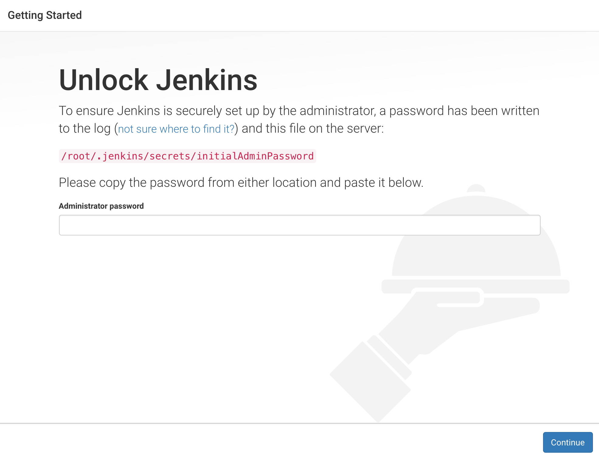
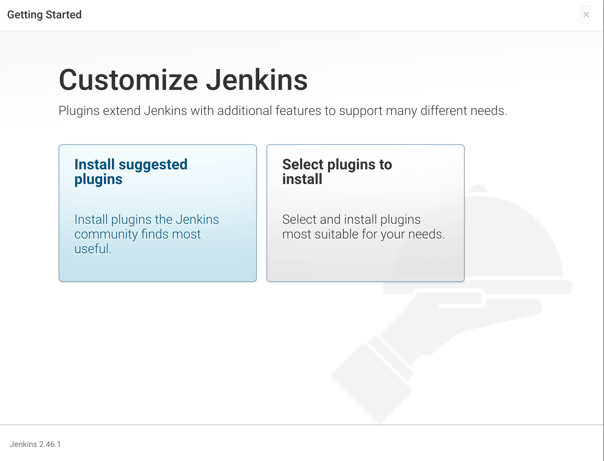
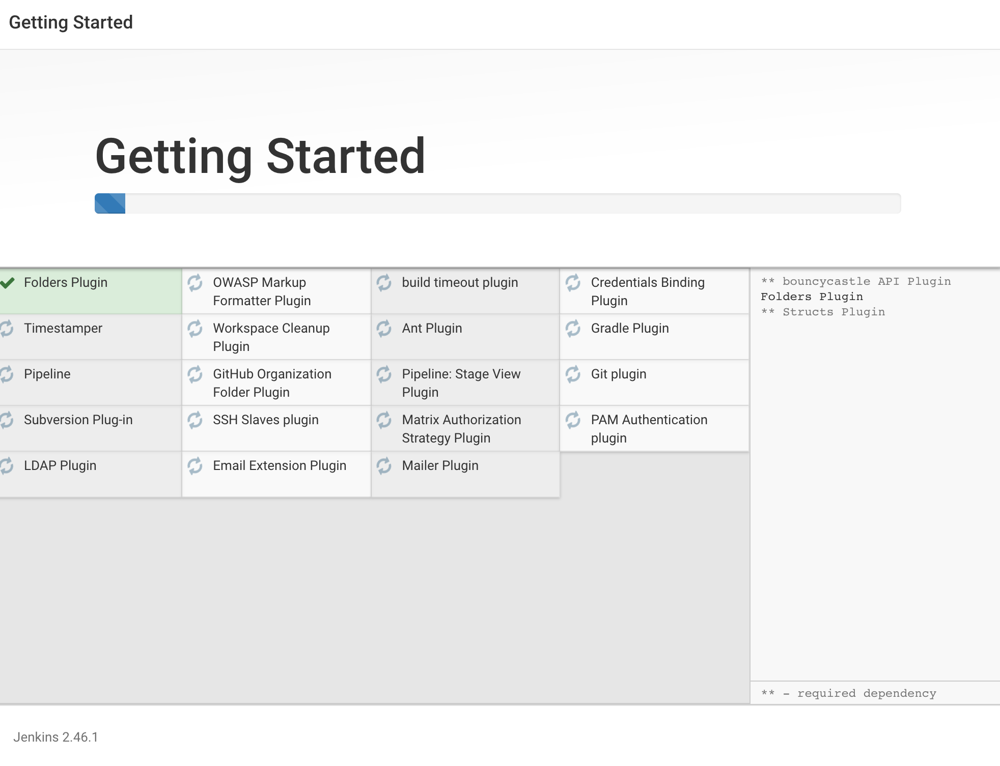
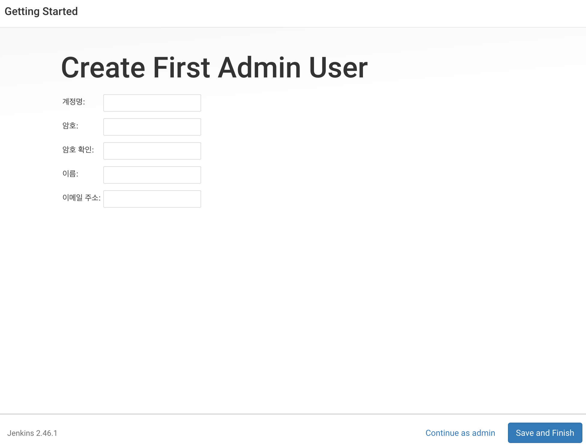
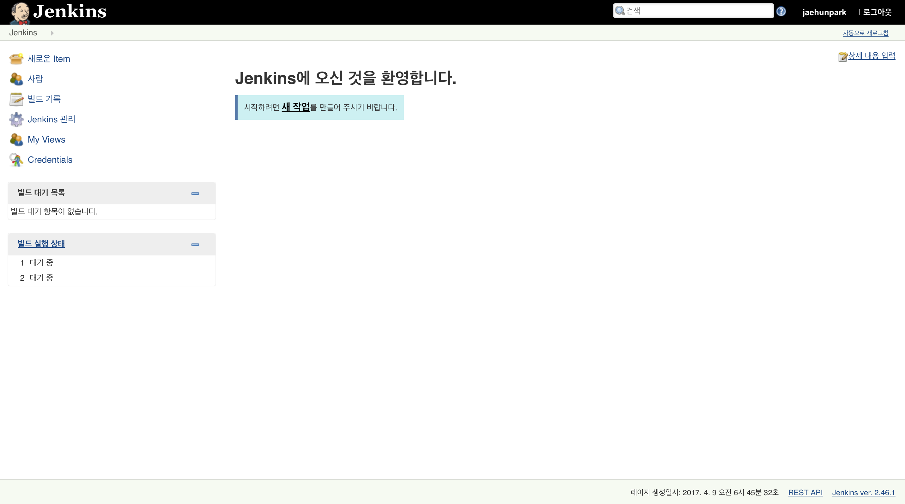

jenkins
jenkins
jenkins란 흔히들 CI(continuous integration) 이라고들 이야기한다.
CI란 개발자가 개발한 결과물 에대해서 수정,배포를 용이하게 하는 일종에 중간에 비서같은 역활을 수행한다.
jenkins 공식사이트를 보면, 상단에 중년의 남성이(?) 맞이하는걸 볼수있다.
jenkins의 활용
jenkins의 주목적은 위에서 언급한 바와같이 ‘지속적인 통합이다’.
최종적으로 배포서버에 안정적으로 배포가 가능하도록 하는것이 jenkins가 추구하는 방향이다.
그럼 ‘안정적인 배포’는 어떤의미일까.
서비스를하는 기업은 개발한 서비스를 소비자가 이용하는데에 있어서 불편함이없어야한다.
jenkins를 활용하면 배포전에 jUnit test(java), supertest(node) 등 개발환경에따라 배포전 사전작업을 무엇이든지 시킬수있다.
또한 test 수행 결과에 있어서 개발자들에게 메일발송이나, 소스코드 검증과같은 sonar qube 와 같은 third party plugin을 활용할수있다.
우리의 든든한 비서는 무엇이든지 수행할수있다.
jenkins 시작하기
이전포스트에서 docker를 활용하여 jenkins 환경을 구성하였다.
이 docker 컨테이너를 이용하여 jenkins를 시작해보자.

docker container로 실행된 jenkins를 접속하게되면, password를 입력하라고 나오게된다.
이제 jenkins 가 알려준 경로의 비밀번호를 확인해보자
먼저 docker container에 접속한다
접속을하였다면 비밀번호를 출력하자
출력되는 비밀번호를 jenkins에 입력한다 .


비밀번호 입력후 jenkins가 제안하는 plugin을 설치한다.
jenkins에 익숙한 분들이라면 select plugins to install 에서 플러그인들을 선택해서 원하는 플러그인을 설치해도 무방하다.

설치가 진행이 완료되면, jenkins 에 접속될 계정을 생성한다

이제 jenkins를 시작할 준비를 모두마쳤다 !
견해
jenkins는 분명 좋은 framework임에는 틀림이없어보인다. 만약 jenkins를 사용하지않는다면, 개발한 결과물에대해서는 자체 test를 내부적으로 한번 진행을 하고, 부가적으로 filezilla와 같은 프로그램을통해 원격 서버에 접속을하여 직접 배포를 해야할것이다.
특히 한번올리고 끝이아니라, 수정또는 기능추가로 버전이 올라가 잦은 재배포를 해야할경우에 jenkins의 가치가 증명될거라 생각된다.
필자는 사실 모든걸 다알기전에는 실천하지않는 이상한 습관이있다.
‘배운것을 깔짝 쓸바에야 전부다 알고 제대로 쓰겠다 ‘라는 아주 이상한 마인드가 있다.
jenkins를 처음접하는 분들이라면 처음에는 좀 생소할수있으나, 한번두번씩 따라해다보면 금방 익숙해질것이다.